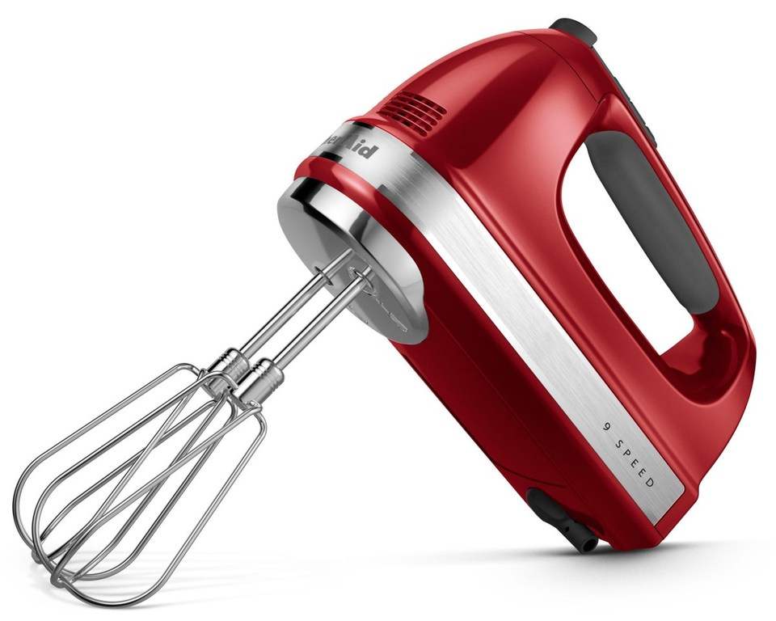

Миксер ручной BORK E700 VS KitchenAid 5KHM9212
Современная техника отличается от ретро тем, что экономит самое ценное на сегодняшний день – время. Ретро дизайн - это на любителя, а вот ретро технологии это вчерашний, а быть может и позавчерашний день.
KitchenAid 5KHM9212
Преимущества KitchenAid, которые пытаются продать:
- Дизайн и выбор цветов
- Страна производства США
- Срок гарантии 2 года
- Компания, которая изобрела миксеры в 1919 году
- KitchenAid переводится, как кухонный помощник
Характеристики KitchenAid:
- Потребляемая мощность: 85 Вт
- Количество скоростей: 9
- Скорость вращения насадок: 1300 - 2300 об/мин
- Тип управления механическое
- Тип двигателя DC постоянный ток
-
Насадки:
Венчики из 4-х контуров – 2 шт
Насадки для теста – 2 шт
Венчик из 16 контуров – 1 шт
Диск для взбивания напитков – 1 шт
Преимущества миксера BORK E700:
- Современный тип управления (дисплей, Scroll переключатель скоростей с режимом BOOST, таймер) обеспечит комфорт при пользовании миксером
- Инновационный анализатор типа насадок с цветовой индикацией избавит от ошибки при выборе скорости миксера
- Во время работы миксера LED-лампа освещает ингредиенты внутри чаши и позволяет следить за ходом их перемешивания
- Петля затвора для снятия насадок удобна в использовании и сводит к минимуму случайное извлечение насадок во время работы миксера
- Насадки скребки идеально подходят для жидкого теста. Насадки соберут тесто со стенок посуды и не поцарапают их
- Два венчика с 16-ю контурами обеспечат максимально быстрое взбивание и насыщение продукта кислородом
- Режим пауза сохранит время обработки при добавлении ингредиентов и позволит максимально точно следовать рецепту
- Благодаря удобному контейнеру, все насадки и миксер компактно хранятся в одном месте, не теряются и всегда готовы к работе
- Реальная цена отличного продукта
Покупая KitchenAid, вы покупаете не только ретро дизайн, но и ретро технологии.